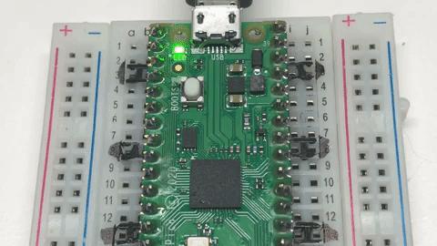

Lab 2: Blink — Your First Hardware Program
Time: ~30 minutes | Prerequisites: Lab 1 | Hardware: Pico 2, USB cable
Let's make something happen in the real world
 Last lab your chip talked to your screen. This lab it moves electrons — flipping a
real voltage on a real wire, half a volt at a time. That's the door into everything
else we do. Time to transform!
Last lab your chip talked to your screen. This lab it moves electrons — flipping a
real voltage on a real wire, half a volt at a time. That's the door into everything
else we do. Time to transform!
What You'll Build

A blinking LED. Yes, really. But stay with me: the moment your code changes a voltage on a pin is the moment a program stops being abstract. Every sensor, every display, every microphone in this course is that same idea with more wires.
Learning Objectives
- Explain what a GPIO pin is and what "output mode" means
- Control a physical LED from Python
- Use
time.sleep()to control timing - Write a loop that runs forever and stop it cleanly
- Predict what happens when you change the delay
Concepts Introduced
| ID | Concept |
|---|---|
| 211 | General Purpose IO |
| 212 | GPIO Pin |
| 213 | Pin Object |
| 214 | Digital Output |
| 215 | Onboard LED |
| 216 | Logic High And Low |
| 217 | Pin Toggle |
| 218 | Sleep Delay |
| 219 | Infinite Loop |
Background
Look at the edges of your Pico 2. Those metal contacts are GPIO pins — General Purpose Input/Output. "General purpose" means the chip doesn't care what you plug in; you decide whether each pin reads the world or drives it.
A pin in output mode has exactly two states:
| Value | Voltage | Nickname |
|---|---|---|
1 |
3.3 V | HIGH |
0 |
0 V | LOW |
That's the whole vocabulary. Everything else — displays, microphones, motors — is built by flipping pins like these very fast in agreed-upon patterns.
Your board has an LED already wired to GPIO 25, so you can blink without touching a breadboard.
Digital means exactly two choices
 A digital pin is on or off. Nothing in between. That sounds limiting until you realise
the microphone in Lab 7 sends audio down a single digital wire — by flipping it
millions of times a second. Speed turns two choices into infinite detail.
A digital pin is on or off. Nothing in between. That sounds limiting until you realise
the microphone in Lab 7 sends audio down a single digital wire — by flipping it
millions of times a second. Speed turns two choices into infinite detail.
Procedure
Step 1 — Blink
Open 02-blink.py from the Raspberry Pi Pico side of Thonny's Files panel:
1 2 3 4 5 6 7 8 9 10 11 12 13 14 15 16 17 18 19 20 21 22 23 24 25 26 27 28 29 30 31 32 33 34 35 36 | |
Run it. The little green LED next to the USB connector starts flashing, once per second.
Press Ctrl-C to stop. Notice the LED ends up off — that's the except KeyboardInterrupt
block doing its job.
Pico 2 or Pico 2 W? The LED moved
 On a plain Pico 2 the onboard LED is GPIO 25. On a Pico 2 W it isn't a GPIO at
all — the wireless chip drives it, and you reach it by the name
On a plain Pico 2 the onboard LED is GPIO 25. On a Pico 2 W it isn't a GPIO at
all — the wireless chip drives it, and you reach it by the name "LED". The sneaky part:
Pin(25) is accepted on a W board and simply lights nothing. No error, no blink, no
clue. The code above tries "LED" first and falls back, so it works on both.
Step 2 — Predict, then measure
Before you change anything, write down your answer:
Prediction: if you change both
time.sleep(0.5)calls totime.sleep(0.05), what will you see?
Now do it. Were you right?
Try 0.005 as well. At some point your eye stops seeing a blink and starts seeing a dim,
steady glow. That's not the LED changing — it's you. Human vision blurs together anything
faster than roughly 50 flashes per second.
You just discovered PWM
 Blinking faster than the eye can follow, to make something look dimmer, is called
Pulse Width Modulation. It's how screen brightness and motor speed control work.
You found it by accident, which is the best way.
Blinking faster than the eye can follow, to make something look dimmer, is called
Pulse Width Modulation. It's how screen brightness and motor speed control work.
You found it by accident, which is the best way.
Step 3 — Toggle instead
There's a shorter way to flip a pin. Replace the two value() calls with one:
1 2 3 | |
Same blink, half the code. toggle() just means "whatever you are, be the other thing."
Step 4 — Make a pattern
Try a heartbeat: two quick flashes, then a pause.
1 2 3 4 5 | |
Expected Output
The onboard LED blinks steadily at one flash per second, and the Shell shows:
1 | |
After Ctrl-C:
1 | |
Troubleshooting
| Symptom | Likely cause | Fix |
|---|---|---|
| Nothing blinks, no error | You have a Pico 2 W and used Pin(25) |
On W boards the LED belongs to the wireless chip: use Pin("LED", Pin.OUT). The lab code tries this automatically |
| Nothing blinks | Wrong pin number | On a plain Pico 2 the onboard LED is GPIO 25 |
NameError: name 'Pin' is not defined |
Missing import | Add from machine import Pin at the top |
| LED stays on after Ctrl-C | No cleanup handler | Add the except KeyboardInterrupt block |
| Can't stop it | Focus isn't in the Shell | Click the Shell panel first, then Ctrl-C |
| LED looks dim, not blinking | Delay too short | Increase sleep() back to 0.5 |
Challenges
- SOS. Blink
... --- ...in Morse code, then pause and repeat. - Speed ramp. Start slow and get gradually faster, then reset. Hint: use a variable for the delay and shrink it each pass.
- Count it. Print a running count of blinks alongside the flashing. How does adding the
printaffect the timing? (Keep that question in mind — it comes back with a vengeance in Lab 26.)
Check Your Understanding
- What two voltages can a digital output pin produce on the Pico 2?
- Why does the program need
try/except KeyboardInterrupt? - If you deleted both
time.sleep()calls, what would the LED look like — and why? - What's the difference between
led.value(1)andled.toggle()?
That's a real superpower, small as it looks
 You just made software change the physical world on command. Next lab we interrogate
the chip about itself — and find the numbers that will shape every optimization
decision you make later.
You just made software change the physical world on command. Next lab we interrogate
the chip about itself — and find the numbers that will shape every optimization
decision you make later.
Next: Lab 3: Know Your Board | Previous: Lab 1